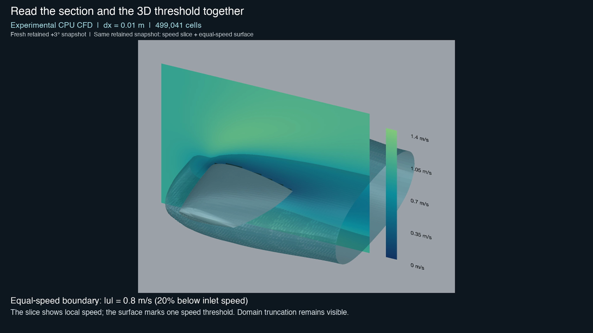
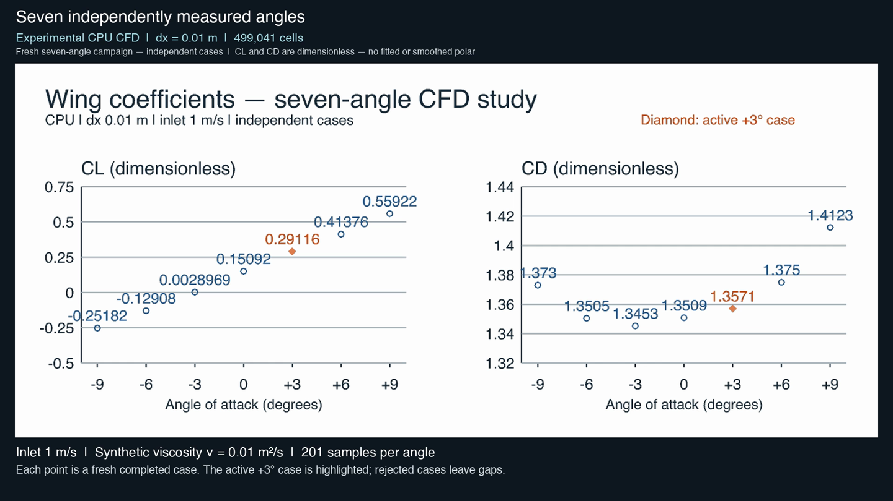

Save, import, export, resume
A small block example includes an idle Rhino document and a real 60-step CPU checkpoint. Import paused, adjust the view, export field/probe CSV, then explicitly continue to 120 steps.
Build the wing in Grasshopper. Run the study inside Rhino. Inspect the surrounding flow, compare measured loads, and keep data for another session.
An update to the 0.5 development branch, not a new numbered release. This record covers the work merged since the previous correctness update.
Watch on YouTube ↗ · 57 seconds · Captioned, no audio
The scan and camera orbit inspect one retained +3° field. They do not show advancing simulation time. The 0.8 m/s surface represents equal speed, not a vortex criterion, and reaches the domain outlet.
Example 35 constructs a closed lofted wing through ordinary Grasshopper geometry, then passes its mesh to Hawa Stationary Study. Shape controls remain part of the definition. The bounded CPU study prepares and evaluates cases in the background, retaining the selected field and measured load history for inspection in Rhino.
The presentation now combines 25 spanwise velocity slices, a transparent speed isosurface, a pressure view and native Rhino coefficient charts. Surface colours are sampled pressure values; they are not a retained per-face force-vector dataset. Lift and drag come from the solver’s integrated body loads and the declared reference directions.

Open the wing walkthrough · Study contract · PRs #118, #123
Seven fresh Mac CPU cases used the same 81 × 101 × 61 grid, 1 m/s inlet, density 1 kg/m³ and synthetic kinematic viscosity 0.01 m²/s. Each used 3000 settling advances and 201 samples. All seven windows met the unchanged absolute coefficient stationarity criterion of 0.05.

| Angle | CL | CD | Lift (N) | Drag (N) |
|---|---|---|---|---|
| -9° | -0.25182 | 1.37302 | -0.01889 | 0.10298 |
| -6° | -0.12908 | 1.35048 | -0.00968 | 0.10129 |
| -3° | 0.00290 | 1.34529 | 0.00022 | 0.10090 |
| +0° | 0.15092 | 1.35088 | 0.01132 | 0.10132 |
| +3° | 0.29116 | 1.35706 | 0.02184 | 0.10178 |
| +6° | 0.41376 | 1.37498 | 0.03103 | 0.10312 |
| +9° | 0.55922 | 1.41227 | 0.04194 | 0.10592 |
The seven cases ran in three bounded batches. The shipped definition retains its two default angles; the seven-case capture and larger chart geometry are documented presentation work, not a new public batch or plotting component.
Capture review and exact conditions · Full-precision provenance · Grid comparison evidence
Native Setup and View edits apply directly. Run remains an explicit action, so changing a view does not start the solver. Import validates the archive before replacement and restores a paused case for saved-result viewing or explicit continuation.
Imported physics stays read-only. Saving the Rhino document does not embed the checkpoint: reopen the model and import the data again.
CSV interchange covers fields, ordered probes and retained moving-body loads, with units, validity masks, capture time and provenance. Existing checkpoint archives and default NPZ exports retain their contracts.
Stationary-study load CSV integration remains part of #40. Pressure colours do not imply that individual surface forces have been exported.
Save and import contract · CSV schemas and limits · PRs #116, #119
A small block example includes an idle Rhino document and a real 60-step CPU checkpoint. Import paused, adjust the view, export field/probe CSV, then explicitly continue to 120 steps.
Construct the wing, run measured angle cases, select retained fields and inspect pressure plus total loads. The documented fine study uses 10 mm cells.
Canvas annotations now explain parent recordings, child imports and the shared slice. This clarifies the assembly without changing its solver or claiming atmospheric qualification.
Mac CPU readback reproduced the block checkpoint and same-backend continuation exactly. Cross-device bitwise equality is not promised. The examples are development assets, not a newly published installer. PRs #114, #121.
Quality evidence · Obstacle scope · Refinement evidence · Host pilot
Mac Rhino checks exercised native setup, data viewing/resume and the CPU wing workflow. Windows work ran headless on an RTX 5070 Ti, leaving Rhino closed while the Mac held the single licence. Historical checks below apply to their linked source versions, not every later commit.
The recorded Python 3.9 run passed 2251 tests, with 92 explicit skips. Device smoke passed 5/5 against CPU FP64. The new export product passed 27/27 contract rows and native-data import/continuation passed 14/14. Expected rejection rows verify rejection, not successful simulation.
Seven fresh CPU angle windows, exact coefficient/force readback and 23 decoded video frames were checked. Final-head CI and Greptile 5/5 passed before merge. The flow views and measurements came from Rhino; no new solver or CUDA wing qualification was claimed.
Atmospheric findings and next experiment · Current issue tracker ↗
This update links the merged work in #107, #109, #110, #112, #113, #114, #116, #118, #119, #121, #123. The earlier MPS serialization, field-validity and particle-removal work remains documented in the preceding buildlog.
Issues #35 and #98 are closed for their completed scope. An implemented feature, a verified workflow, a development package and a public release are different milestones. The current work remains an experimental development build.